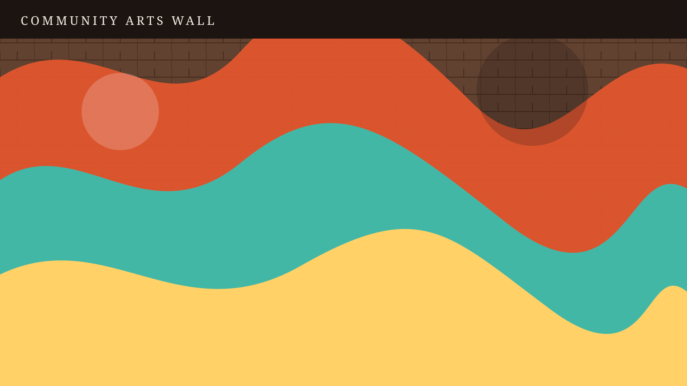
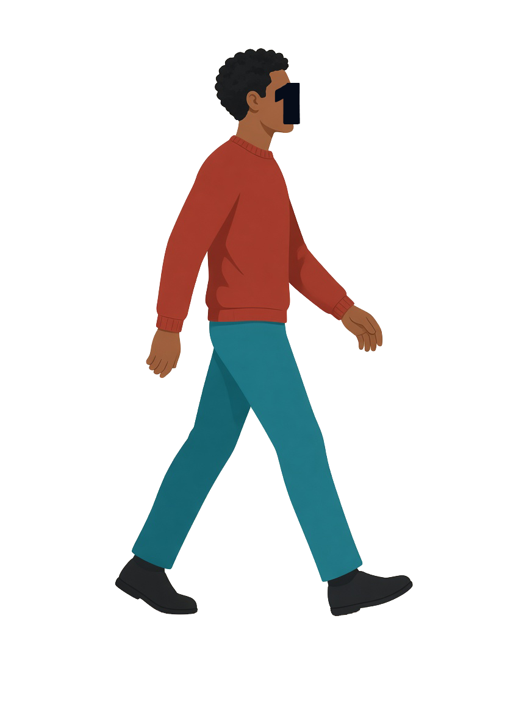
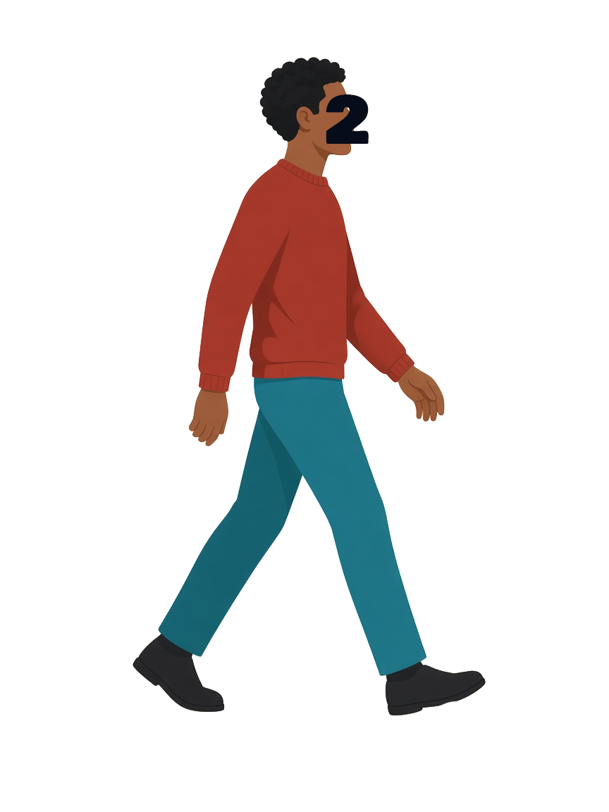
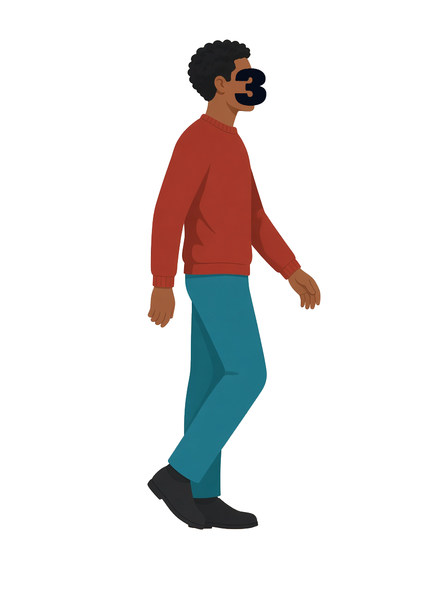
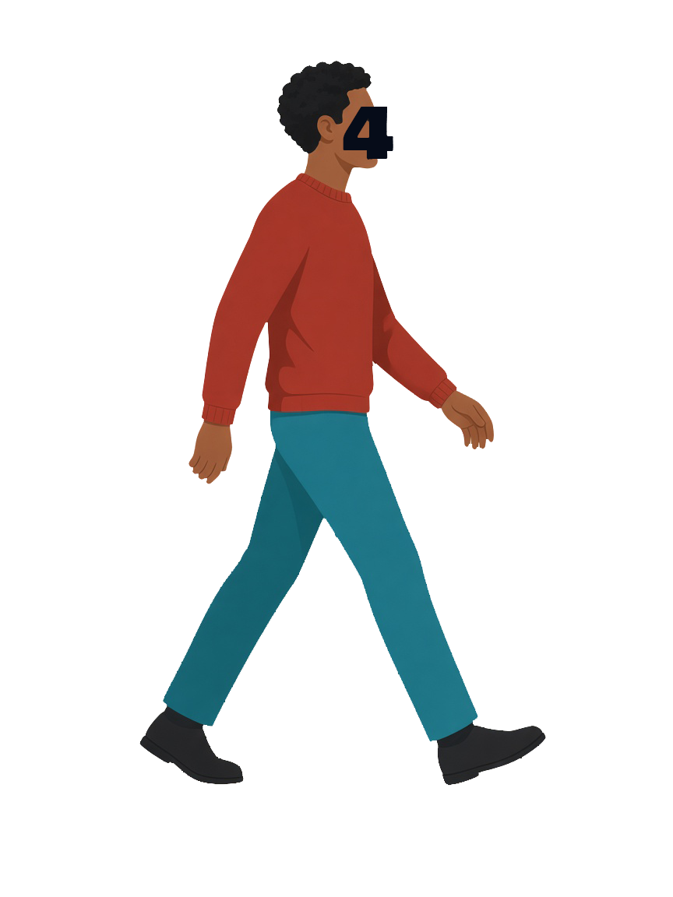
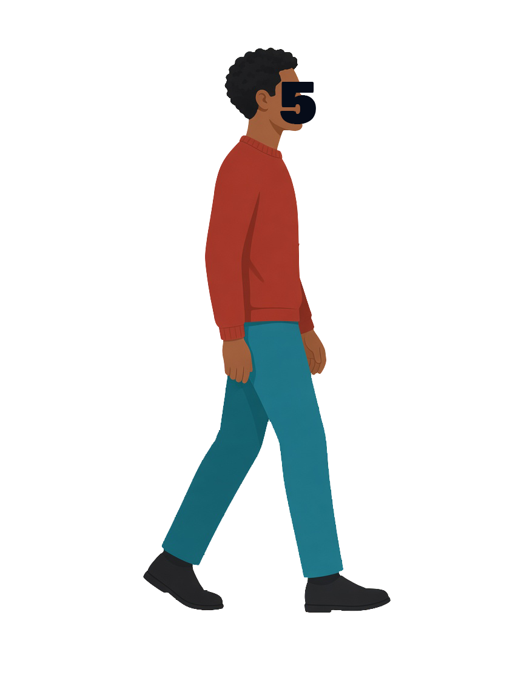
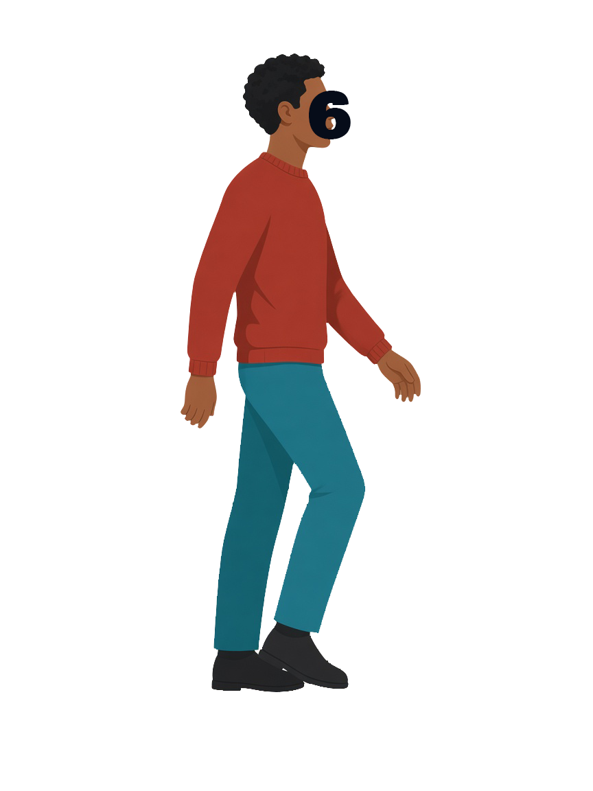
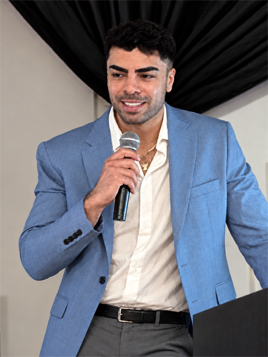
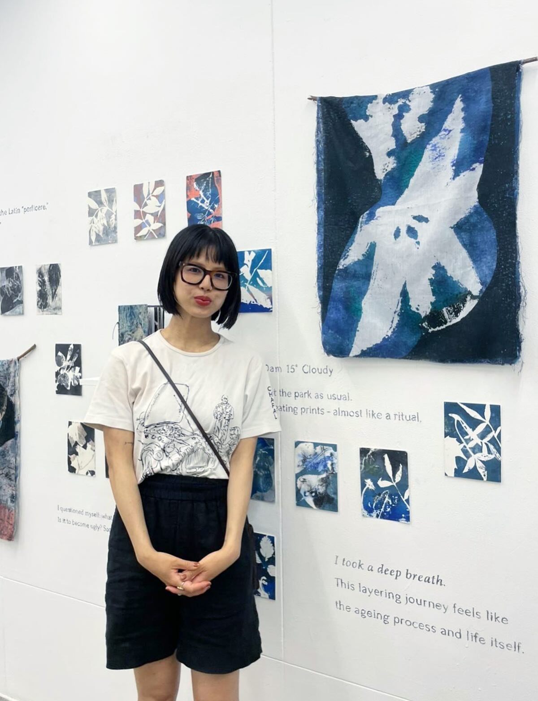

Join a workshop
Explore creative activities and meet local neighbours. Email us for upcoming workshop details.
Ask about upcoming workshops






CommunityArts
Mural under construction
Elephant & Castle
Community Arts is a small, independent arts initiative based in Elephant & Castle, Southwark.
We organise free, hands-on art workshops that bring local residents and young artists together. Our aim is simple: to give people of different ages and backgrounds a place to meet, make things and learn from one another.
Our workshops began at Draper Hall, where we've been experimenting with botanical printing, natural dyes and collage. We're also looking to introduce activities such as calligraphy, knitting and textiles, with workshops shaped by the interests and skills of the people taking part.
Alongside this, we want to give students and emerging artists opportunities to lead workshops, gain practical teaching experience and, as funding allows, be paid for their work.
We're starting locally, with the hope of gradually bringing these activities to more community spaces across Southwark.
Explore creative activities and meet local neighbours. Email us for upcoming workshop details.
Ask about upcoming workshopsBring botanical printing or collage to your community space. Contact us to discuss your group, venue and budget.
Discuss hosting a workshopBringing us together

Project Lead & Workshop Facilitator
Anis is an artist and animator with a background in experimental 3D animation, higher education and creative project coordination. Born and raised in Elephant & Castle, he founded Community Arts out of a desire to bring something back to the neighbourhood he grew up in. Drawing on his experience working with students and supporting creative projects, he brings together local artists, residents and community spaces to make art more accessible while creating opportunities for the next generation of creatives.

Specialist Workshop Facilitator — Botanical Print & Illustration
Miki is a creative practitioner with a particular interest in botanical printing and illustration. Inspired by the natural world, she uses an experimental approach to explore the unexpected colours, patterns and textures of everyday organic materials. Funded by UAL's Community Exchanges programme, she has run workshops across Southwark, including at Walworth Living Room and Trinity Centre, as well as public workshops at Two Temple Place, Hypha Studios and Camberwell College of Arts. Her workshops invite participants to slow down, engage their senses through touch, scent and close observation, sparking creativity through playful experimentation with natural materials.
Specialist Workshop Facilitator — Collage & Calligraphy
Anna is a hands-on creative with a love for craft, fashion and the art of making things by hand. An enthusiastic sewer with a particular interest in clothing repair and creative reuse, she enjoys finding new possibilities in familiar materials. Alongside her artistic interests, her qualifications in early-years care give her a strong foundation in supporting creative exploration and engaging with different learning styles. Her approach to collage and calligraphy combines practical craftsmanship, playfulness and an appreciation for the little details that make handmade work unique.
With gratitude
From the studio
A growing record of the things we make, the people we meet and the ideas we explore. Follow our workshops, creative experiments and collaborations as Community Arts develops across Southwark.